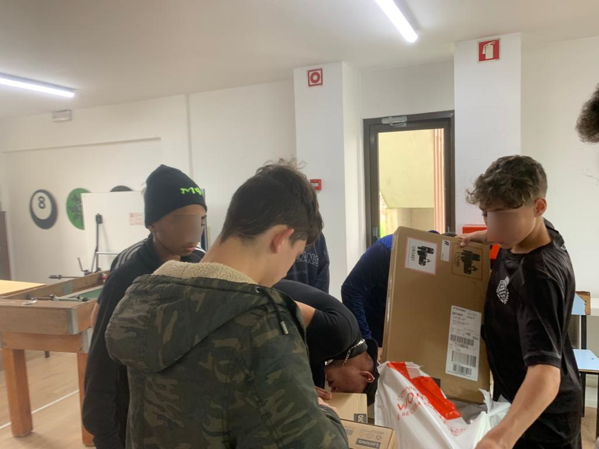

Objetivos atingidos no final de Abril de 2020
Recebemos 3585€ em doações durante Abril
- 4 doções institucionais (ISOC PT, ISOC NL, ISOC Foundation, DNS.PT)
- cerca de 20 doações individuais
Gastámos 3600€ na aquisição de 8 portáteis
Gastámos 3600€ na aquisição de 8 portáteis IdeadPad da Lenovo, modelo S145 (15″, 4 GB de ram, 128 GB SSD), que já foram entregues às seguintes casas de acolhimento de Jovens:
Fundão – Abrigo S. José (2 portáteis)
Portalegre – S.C. M. Portalegre – Casa Acolhimento Stº António (3 portáteis)
Porto – Centro Juvenil de Campanhã (3 portáteis)
Os computadores encontram-se ao serviço desde o final da primeira semana de Maio de 2020.
Aqui é possível consultar um conjunto de comprovativos nomeadamente, como foi feita a escolha do modelo de computador selecionado, a fatura de aquisição e declarações de entrega e receção dos computadores nas casas de abrigo
Os computadores no Abrigo S. José (Fundão)
Os computadores no S.C. M. Portalegre – Casa Acolhimento Stº António

Os computadores no Centro Juvenil de Campanhã (Porto)
